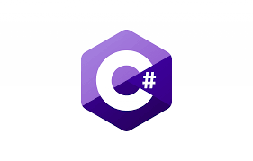

Python is an easy to learn, powerful programming language. It has efficient high-level
data structures and a simple but effective approach to object-oriented programming.
Python’s elegant syntax and dynamic typing, together with its interpreted nature,
make it an ideal language for scripting and rapid application development in many
areas on most platforms.

Java is a high-level programming language originally developed by Sun
Microsystems and released in 1995. Java runs on a variety of platforms, such as
Windows, Mac OS, and the various versions of UNIX.

C# is a modern, general-purpose, object-oriented programming language developed
by Microsoft and approved by European Computer Manufacturers Association
(ECMA) and International Standards Organization (ISO).

C++ is a middle-level programming language developed by Bjarne Stroustrup starting
in 1979 at Bell Labs. C++ runs on a variety of platforms, such as Windows, Mac OS,
and the various versions of UNIX.